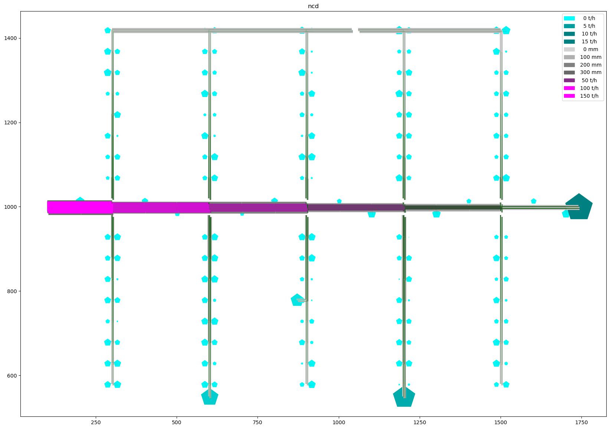

Tutorial 73: Network Color Depiction
This example demonstrates how to plot network color depictions (ncd).
SIR 3S Installation
[1]:
SIR3S_SIRGRAF_DIR = r"C:\3S\SIR 3S\SirGraf-90-15-00-24_Quebec-Upd2" #change to local path
Imports
[2]:
from sir3stoolkit.core import wrapper
[3]:
from sir3stoolkit.mantle import mantle
The wrapper package has to be initialized with reference to a SIR 3S (SirGraf) installation.
[4]:
wrapper.Initialize_Toolkit(SIR3S_SIRGRAF_DIR)
[2026-11-25 16:27:59,837] INFO in sir3stoolkit.core.wrapper: [Initialization] Using provided SirGraf path: C:\3S\SIR 3S\SirGraf-90-15-00-24_Quebec-Upd2
[2026-11-25 16:27:59,837] INFO in sir3stoolkit.core.wrapper: [Initialization] Using provided SirGraf path: C:\3S\SIR 3S\SirGraf-90-15-00-24_Quebec-Upd2
[2026-11-25 16:27:59,859] INFO in sir3stoolkit.core.wrapper: [Initialization] Initializing toolkit with SirGraf path: C:\3S\SIR 3S\SirGraf-90-15-00-24_Quebec-Upd2
[2026-11-25 16:27:59,971] INFO in sir3stoolkit.core.wrapper: [Initialization] Sir3S_Toolkit.dll file version 90.15.11.0 (matches this sir3stoolkit version).
Additional imports
[5]:
import matplotlib.pyplot as plt
…
Initialization
[6]:
s3s = mantle.SIR3S_Model_Mantle()
[2026-11-25 16:28:00,135] INFO in sir3stoolkit.core.wrapper: [Model Class Initialization] Initialization complete
Open Model
The tutorial uses Network 3, a fictional district heating network shared by the mantle tutorials: a heat plant (in its own container “Heizwerk”), about 180 consumers, a ring road and two longitudinal sections, calculated over one day. It is built from scratch with the SIR 3S Toolkit by Network3.py; Network3.db3 is included in the tutorial’s ZIP archive.
Its elements have unique ID references (IDREFERENZ), e.g. VL-HS-01 for the first supply pipe of the main street. They are used below to look up tks with GetTkFromIDReference() - the tks themselves differ between builds of the model.
[7]:
dbFilePath=r"Network3.db3"
[8]:
s3s.OpenModel(dbName=dbFilePath,
providerType=s3s.ProviderTypes.SQLite,
Mid="M-1-0-1",
saveCurrentlyOpenModel=False,
namedInstance="",
userID="",
password="")
[2026-11-25 16:28:06,040] INFO in sir3stoolkit.core.wrapper: Model is open for further operation
Calculate Model
[9]:
s3s.ExecCalculation(True) # To ensure result data
[2026-11-25 16:28:11,052] INFO in sir3stoolkit.core.wrapper: Model Calculation is complete
Prep Data
District Heating consumers
[10]:
df_district_heating_consumer_model_data = s3s.generate_element_model_data_dataframe(s3s.ObjectTypes.DistrictHeatingConsumer
,properties=[]
,geometry=True)
[2026-11-25 16:28:11,067] INFO in sir3stoolkit.mantle.dataframes: [model_data] Generating model_data dataframe for element type: ObjectTypes.DistrictHeatingConsumer
[2026-11-25 16:28:11,069] INFO in sir3stoolkit.mantle.dataframes: [model_data] Retrieved 175 element(s) of element type ObjectTypes.DistrictHeatingConsumer.
[2026-11-25 16:28:11,078] INFO in sir3stoolkit.mantle.dataframes: [Resolving model_data Properties] Using 0 model_data properties.
[2026-11-25 16:28:11,081] INFO in sir3stoolkit.mantle.dataframes: [model_data] Retrieving geometry...
[2026-11-25 16:28:11,102] WARNING in sir3stoolkit.mantle.dataframes: [model_data] Spatial Reference Identifier (SRID) not defined in model. DataFrame cannot be transformed to GeoDataFrame but geometry column can be created independently of SRID. Returning regular DataFrame with a geometry column.
[2026-11-25 16:28:11,102] INFO in sir3stoolkit.mantle.dataframes: [model_data] Done. Shape: (175, 2)
[11]:
df_district_heating_consumer_results=s3s.generate_element_results_dataframe(element_type=s3s.ObjectTypes.DistrictHeatingConsumer
,properties=["QM"]
,timestamps=[0])
[2026-11-25 16:28:11,121] INFO in sir3stoolkit.mantle.dataframes: [results] Generating results dataframe for element type: ObjectTypes.DistrictHeatingConsumer
[2026-11-25 16:28:11,185] INFO in sir3stoolkit.mantle.dataframes: [Resolving Timestamps] Only static timestamp 2026-01-15 00:00:00.000 +01:00 is used
[2026-11-25 16:28:11,187] INFO in sir3stoolkit.mantle.dataframes: [Resolving tks] Retrieved 175 element(s) of element type ObjectTypes.DistrictHeatingConsumer.
[2026-11-25 16:28:11,188] INFO in sir3stoolkit.mantle.dataframes: [results] Using 1 result properties.
[2026-11-25 16:28:11,188] INFO in sir3stoolkit.mantle.dataframes: [results] 1 timestamp(s), 175 element(s), 1 property resolved (0.1 s).
[2026-11-25 16:28:11,188] INFO in sir3stoolkit.mantle.dataframes: [results] Retrieving result values... (bulk=False)
[2026-11-25 16:28:11,208] INFO in sir3stoolkit.mantle.dataframes: [results] 175 value(s) retrieved via GetResultfortimestamp() (0.0 s).
[2026-11-25 16:28:11,221] INFO in sir3stoolkit.mantle.dataframes: [results] 0 fully NaN columns dropped.
[2026-11-25 16:28:11,221] INFO in sir3stoolkit.mantle.dataframes: [results] DataFrame assembled (0.0 s).
[2026-11-25 16:28:11,235] INFO in sir3stoolkit.mantle.dataframes: [results] Names/end nodes of 175 element(s) looked up (0.0 s).
[2026-11-25 16:28:11,242] INFO in sir3stoolkit.mantle.dataframes: [results] Done. Shape: (1, 175) (0.1 s in total)
[12]:
df_district_heating_consumer_results.columns = df_district_heating_consumer_results.columns.droplevel([1, 2])
df_district_heating_consumer_results = df_district_heating_consumer_results.T.unstack(level=0).T
df_district_heating_consumer_results = df_district_heating_consumer_results.droplevel(0, axis=0)
df_district_heating_consumer = df_district_heating_consumer_model_data.merge(on="tk",
how="outer",
right=df_district_heating_consumer_results)
[13]:
df_district_heating_consumer.head(3)
[13]:
| tk | geometry | QM | |
|---|---|---|---|
| 0 | 4619274837930594515 | POINT Z (317 1318 199.83999633789062) | 0.451120 |
| 1 | 4626565215742718797 | POINT Z (317 1118 197.02000427246094) | 0.501469 |
| 2 | 4628630515449372392 | POINT Z (287 1268 198.9600067138672) | 0.355476 |
Pipes
[14]:
df_pipes_model_data=s3s.generate_element_model_data_dataframe(s3s.ObjectTypes.Pipe
,properties=["DN"]
,geometry=True)
[2026-11-25 16:28:11,283] INFO in sir3stoolkit.mantle.dataframes: [model_data] Generating model_data dataframe for element type: ObjectTypes.Pipe
[2026-11-25 16:28:11,285] INFO in sir3stoolkit.mantle.dataframes: [model_data] Retrieved 572 element(s) of element type ObjectTypes.Pipe.
[2026-11-25 16:28:11,288] INFO in sir3stoolkit.mantle.dataframes: [Resolving model_data Properties] Using 1 model_data properties.
[2026-11-25 16:28:11,288] INFO in sir3stoolkit.mantle.dataframes: [model_data] Retrieving model_data properties ['DN'], geometry...
[2026-11-25 16:28:11,352] WARNING in sir3stoolkit.mantle.dataframes: [model_data] Spatial Reference Identifier (SRID) not defined in model. DataFrame cannot be transformed to GeoDataFrame but geometry column can be created independently of SRID. Returning regular DataFrame with a geometry column.
[2026-11-25 16:28:11,353] INFO in sir3stoolkit.mantle.dataframes: [model_data] Done. Shape: (572, 3)
[15]:
df_pipes_results=s3s.generate_element_results_dataframe(element_type=s3s.ObjectTypes.Pipe
,properties=["QMAV"]
,timestamps=[0])
[2026-11-25 16:28:11,358] INFO in sir3stoolkit.mantle.dataframes: [results] Generating results dataframe for element type: ObjectTypes.Pipe
[2026-11-25 16:28:11,402] INFO in sir3stoolkit.mantle.dataframes: [Resolving Timestamps] Only static timestamp 2026-01-15 00:00:00.000 +01:00 is used
[2026-11-25 16:28:11,402] INFO in sir3stoolkit.mantle.dataframes: [Resolving tks] Retrieved 572 element(s) of element type ObjectTypes.Pipe.
[2026-11-25 16:28:11,402] INFO in sir3stoolkit.mantle.dataframes: [results] Using 1 result properties.
[2026-11-25 16:28:11,402] INFO in sir3stoolkit.mantle.dataframes: [results] 1 timestamp(s), 572 element(s), 1 property resolved (0.1 s).
[2026-11-25 16:28:11,402] INFO in sir3stoolkit.mantle.dataframes: [results] Retrieving result values... (bulk=False)
[2026-11-25 16:28:11,495] INFO in sir3stoolkit.mantle.dataframes: [results] 572 value(s) retrieved via GetResultfortimestamp() (0.1 s).
[2026-11-25 16:28:11,502] INFO in sir3stoolkit.mantle.dataframes: [results] 0 fully NaN columns dropped.
[2026-11-25 16:28:11,511] INFO in sir3stoolkit.mantle.dataframes: [results] DataFrame assembled (0.0 s).
[2026-11-25 16:28:11,559] INFO in sir3stoolkit.mantle.dataframes: [results] Names/end nodes of 572 element(s) looked up (0.1 s).
[2026-11-25 16:28:11,571] INFO in sir3stoolkit.mantle.dataframes: [results] Done. Shape: (1, 572) (0.2 s in total)
[16]:
df_pipes_results.columns = df_pipes_results.columns.droplevel([1, 2])
df_pipes_results = df_pipes_results.T.unstack(level=0).T
df_pipes_results = df_pipes_results.droplevel(0, axis=0)
df_pipes = df_pipes_model_data.merge(on="tk",
how="outer",
right=df_pipes_results)
[17]:
df_pipes['QMAVAbs'] = df_pipes['QMAV'].abs()
[18]:
df_pipes.head(3)
[18]:
| tk | DN | geometry | QMAV | QMAVAbs | |
|---|---|---|---|---|---|
| 0 | 4612274316321154308 | 25 | LINESTRING Z (900 1270 208.30999755859375, 915... | 0.588380 | 0.588380 |
| 1 | 4614940901611765838 | 25 | LINESTRING Z (300 1220 198.0399932861328, 315 ... | 0.609586 | 0.609586 |
| 2 | 4618102496224966047 | 25 | LINESTRING Z (300 830 200.32000732421875, 315 ... | 0.266080 | 0.266080 |
Plotting
[19]:
def plot_Result_ncd(df_pipes, df_district_heating_consumer, axTitle='ncd'):
fig, ax = plt.subplots(figsize=(16.54, 11.69))
# Nodes (size+color by QM)
nodes_patches_1 = s3s.plot_node_layer(
ax=ax,
gdf=df_district_heating_consumer,
attribute='QM',
colors=['cyan', 'teal'],
marker_style='p',
marker_size_factor=3000,
legend_fmt='{:4.0f} t/h',
legend_values=[0, 5, 10, 15],
zorder=1
)
# Pipes layer 1 (size+color by DN)
pipes_patches_2 = s3s.plot_pipe_layer(
ax=ax,
gdf=df_pipes,
attribute='DN',
colors=['lightgray', 'dimgray'],
legend_fmt='{:4.0f} mm',
line_width_factor=25,
legend_values=[0, 100, 200, 300],
zorder=2
)
# Pipes layer 2 (size+color by QMAVAbs)
pipes_patches_3 = s3s.plot_pipe_layer(
ax=ax,
gdf=df_pipes,
attribute='QMAVAbs',
colors=['darkgreen', 'magenta'],
legend_fmt='{:4.0f} t/h',
line_width_factor=20,
legend_values=[0, 50, 100, 150],
zorder=3
)
# Combine handles
handles = []
for h in (nodes_patches_1, pipes_patches_2, pipes_patches_3):
if h:
handles.extend(h)
# Deduplicate legend by label
if handles:
seen = set()
unique = []
for h in handles:
if h.get_label() not in seen:
unique.append(h)
seen.add(h.get_label())
ax.legend(handles=unique, loc='best')
ax.set_title(axTitle)
plt.tight_layout()
[20]:
plot_Result_ncd(df_pipes, df_district_heating_consumer)
[2026-11-25 16:28:11,638] INFO in sir3stoolkit.mantle.plotting: [plot] Plotting nodes (size='None', color='None', attr='QM')
[2026-11-25 16:28:11,664] INFO in sir3stoolkit.mantle.plotting: [plot] Nodes: plotted 175 points.
[2026-11-25 16:28:11,665] INFO in sir3stoolkit.mantle.plotting: [plot] Plotting pipes (width='None', color='None', attr='DN')
[2026-11-25 16:28:11,771] INFO in sir3stoolkit.mantle.plotting: [plot] Pipes: plotted 572 segments.
[2026-11-25 16:28:11,771] INFO in sir3stoolkit.mantle.plotting: [plot] Plotting pipes (width='None', color='None', attr='QMAVAbs')
[2026-11-25 16:28:11,840] INFO in sir3stoolkit.mantle.plotting: [plot] Pipes: plotted 572 segments.
